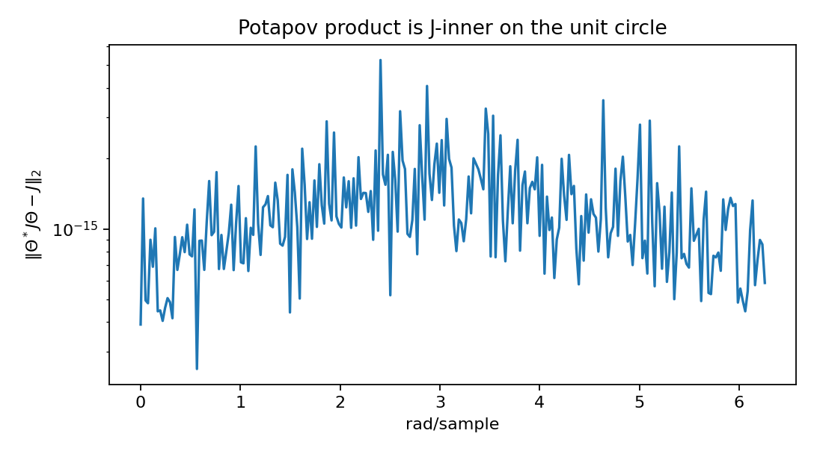
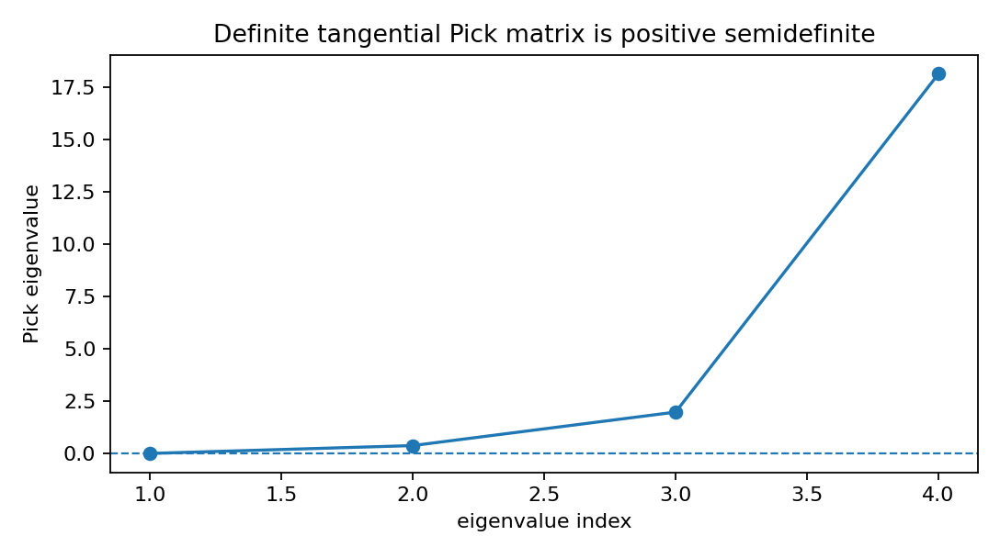

Tangential Schur Pick and J-inner diagnostics¶
Tutorial goal
Check definite right-tangential Schur data with a Pick matrix and verify elementary Potapov J-inner factors.
Note
New to the terminology? See the lattice DSP concept map and the causality/data-use guide for how online, offline, block, and MIMO examples should be read.
Context¶
Tangential interpolation asks a matrix-valued Schur function to match only selected input directions rather than every column of the transfer matrix. This tutorial uses data generated from a known constant contraction so the Pick certificate, interpolation residual, and J-inner diagnostics can all be checked without hiding a difficult synthesis problem inside the example.
Key idea and equations¶
The right tangential data are
The RKHS/de Branges–Rovnyak kernel for a Schur function is
Testing this kernel on tangential directions gives the finite Pick Gram matrix
Feasibility in the definite problem requires \(P\succeq0\). For each strict rank-one datum, the graph vector \(\xi_i=[v_i;u_i]\) has negative J-norm for
The scalar Blaschke factor and its Potapov–Blaschke lift are
The projection \(P_{\xi_i}\) is J-orthogonal. The resulting \(\Theta_i\) is J-inner on the unit circle and annihilates \(\xi_i\) at \(z_i\).
Causality and data use¶
This is finite interpolation-data analysis, not streaming filtering. It is an offline Pick/J-inner diagnostic that explains the matrix-lattice background.
What this example verifies¶
This verifies the finite definite tangential-Schur baseline. The Pick matrix should be positive semidefinite, the known constant contraction should interpolate the data to roundoff, elementary Potapov factors should annihilate their graph vectors, and the factor product should be J-inner on the unit circle.
How to read the result¶
The Pick eigenvalues should be nonnegative, the constant solution residual should be near roundoff, and the J-inner residual should be near numerical precision.
Run command¶
python examples/tangential_schur_pick_jinner.py
Run status¶
Return code: 0
Captured stdout¶
points: 4
input dimension: 2
output dimension: 2
total tangential conditions: 4
known Schur spectral norm: 0.450000
Pick min eigenvalue: 1.634317e-02
Pick condition number: 1.111128e+03
definite Pick test says feasible: True
constant-solution interpolation residual: 3.370e-16
Potapov product J-inner max residual: 5.260e-15
first factor annihilation residual: 1.799e-16
scope: finite definite Pick/RKHS/J-inner diagnostics
not implemented here: full recursive tangential-Schur manifold parametrization
Figures¶
{kind=link}

potapov_j_inner_residual.png¶
{kind=link}

tangential_pick_eigenvalues.png¶
Source code¶
1"""Tangential Schur Pick, RKHS, and Potapov--Blaschke diagnostics.
2
3This example is intentionally small but mathematically explicit. It checks
4finite right-tangential Schur data, the Pick/RKHS Gram matrix, a known constant
5Schur solution, and elementary Potapov--Blaschke J-inner factors.
6
7The factors here are interpolation-side J-inner objects. They are related to
8lossless/all-pass matrix-lattice systems, but this example is not the full
9recursive tangential-Schur manifold algorithm used in the
10Hanzon--Olivi--Peeters/Marmorat literature.
11"""
12
13from __future__ import annotations
14
15import os
16from pathlib import Path
17
18import numpy as np
19
20import lattice_dsp as ld
21
22
23def _artifact_dir() -> Path:
24 path = Path(os.environ.get("LATTICE_DSP_ARTIFACT_DIR", "reports/example-artifacts"))
25 path.mkdir(parents=True, exist_ok=True)
26 return path
27
28
29def _save_figures(pick_eigs: np.ndarray, omega: np.ndarray, residuals: np.ndarray) -> None:
30 try:
31 import matplotlib.pyplot as plt
32 except ImportError: # pragma: no cover - optional plotting dependency
33 print("matplotlib is not installed; skipped figures")
34 return
35
36 out_dir = _artifact_dir()
37
38 fig, ax = plt.subplots(figsize=(6.8, 3.8))
39 ax.plot(np.arange(1, pick_eigs.size + 1), pick_eigs, marker="o")
40 ax.axhline(0.0, linestyle="--", linewidth=1.0)
41 ax.set_xlabel("eigenvalue index")
42 ax.set_ylabel("Pick eigenvalue")
43 ax.set_title("Definite tangential Pick matrix is positive semidefinite")
44 fig.tight_layout()
45 fig.savefig(out_dir / "tangential_pick_eigenvalues.png", dpi=160)
46 plt.close(fig)
47
48 fig, ax = plt.subplots(figsize=(6.8, 3.8))
49 ax.semilogy(omega, np.maximum(residuals, 1e-18))
50 ax.set_xlabel("rad/sample")
51 ax.set_ylabel(r"$\|\Theta^*J\Theta-J\|_2$")
52 ax.set_title("Potapov product is J-inner on the unit circle")
53 fig.tight_layout()
54 fig.savefig(out_dir / "potapov_j_inner_residual.png", dpi=160)
55 plt.close(fig)
56
57
58rng = np.random.default_rng(52)
59output_dim = 2
60input_dim = 2
61points = np.array([0.0, 0.22 - 0.10j, -0.30 + 0.08j, 0.15j])
62raw = rng.normal(size=(output_dim, input_dim)) + 1j * rng.normal(size=(output_dim, input_dim))
63known_schur = 0.45 * raw / np.linalg.svd(raw, compute_uv=False)[0]
64directions = rng.normal(size=(points.size, input_dim)) + 1j * rng.normal(size=(points.size, input_dim))
65values = np.einsum("oi,ni->no", known_schur, directions)
66
67data = ld.RightTangentialSchurData(points, directions, values)
68pick = ld.right_tangential_pick_matrix(data)
69pick_eigs = ld.pick_matrix_eigenvalues(pick)
70constant_solution = ld.constant_schur_solution(data)
71residual = ld.max_tangential_residual(data, constant_solution)
72product = ld.potapov_product_from_rank_one_data(data)
73omega = np.linspace(0.0, 2.0 * np.pi, 256, endpoint=False)
74theta = product.evaluate(np.exp(1j * omega))
75j_residual = ld.j_unitarity_residual(theta, product.j)
76
77print("points:", data.n_points)
78print("input dimension:", data.input_dim)
79print("output dimension:", data.output_dim)
80print("total tangential conditions:", data.total_conditions)
81print("known Schur spectral norm:", f"{np.linalg.svd(known_schur, compute_uv=False)[0]:.6f}")
82print("Pick min eigenvalue:", f"{pick_eigs[0]:.6e}")
83print("Pick condition number:", f"{np.linalg.cond(pick):.6e}")
84print("definite Pick test says feasible:", ld.is_tangential_schur_solvable(data))
85print("constant-solution interpolation residual:", f"{residual:.3e}")
86print("Potapov product J-inner max residual:", f"{np.max(j_residual):.3e}")
87print("first factor annihilation residual:", f"{product.factors[0].annihilation_residual():.3e}")
88print("scope: finite definite Pick/RKHS/J-inner diagnostics")
89print("not implemented here: full recursive tangential-Schur manifold parametrization")
90
91_save_figures(pick_eigs, omega, j_residual)